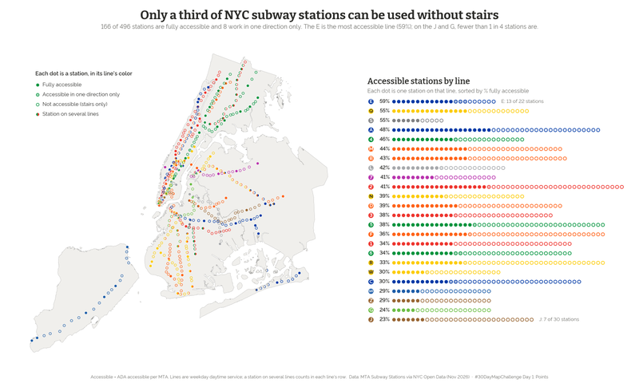

Day 1 · Points
Only a third of NYC subway stations can be used without stairs
Every NYC subway station in its line's color: filled if it is ADA accessible, a ring if it is stairs only. A pictogram stacks each line's stations to compare % accessible by line, from the E (59%) to the J and G (under 1 in 4).